World Future Energy Summit, Abu Dhabi: the pavilion of the Department of Municipal Affairs, 2010 to 2015
World Future Energy Summit · Abu Dhabi · 2010
World Future Energy Summit
Leave your mark.
Read more
I led the team through AntBrush to develop Leave Your Mark for Abu Dhabi’s Department of Municipal Affairs—a campaign connecting individual action with the city’s future.
Department of Municipal Affairs, Abu Dhabi (today the Department of Municipalities and Transport) · ADNEC, Hall 4 · January 2010

The call, passed on
Through the municipalities, to every resident.
Abu Dhabi City, Al Ain City and the Western Region carried it to their people: a print each, every one its own.
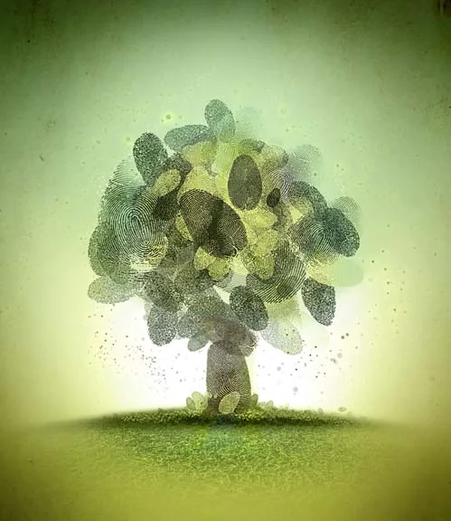
Abu Dhabi CityAl Ain CityWestern RegionEvery residentA thumbprint is a signature no one can copy.
The city signed its projects with one, and asked its people to add theirs.
A thumbprint is a signature no one can copy.
The city signed its projects with one, and asked its people to add theirs.
The ads · 2010

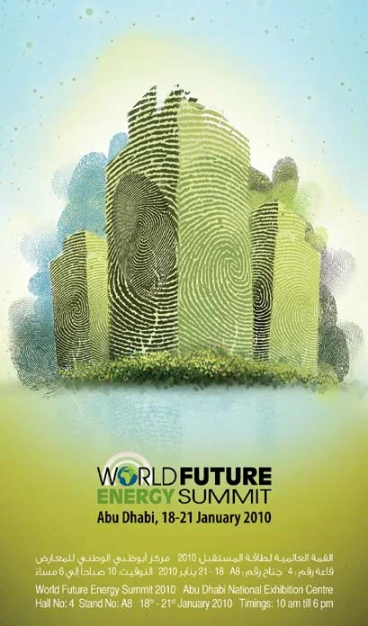

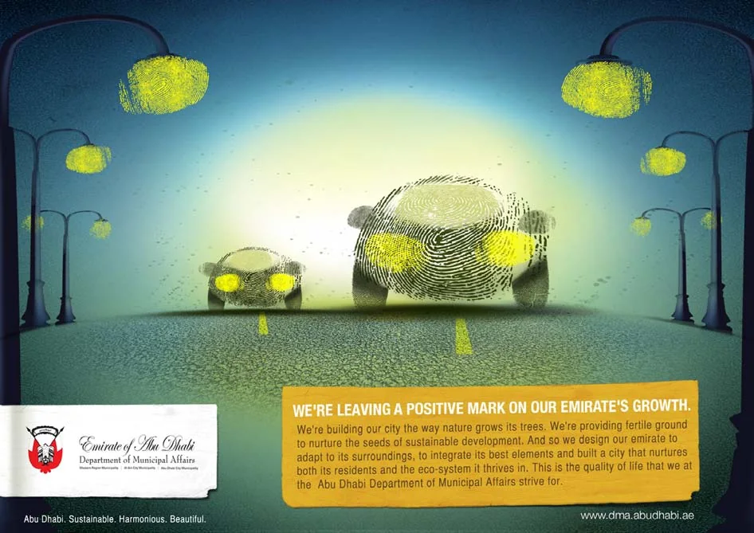


The city
The same prints build its towers.
The road
…and light its roads.
In 2010 the government put AED 2 billion (about US$545 million) into the emirate’s street lights. Its Sustainable Public Lighting Strategy, which made LED the rule on every road, was one of the projects our work presented.
Recycling, then the codes
The same print signed the city’s new building codes.
The Building Codes campaignThe invitation and the kit
An invitation you could sign.
A kraft sleeve that said “Leave your imprint”; inside, the invitation and a bookmark cut to the shape of a thumb, with the hall and the stand. Guests of honour and the press received a kit and a solar charger.

ADNEC, Hall 4 · January 2010
Then the print became a room.
A thumbprint across the ceiling, over everyone who came; the campaign line on the canopy, the cars ad on the screens.

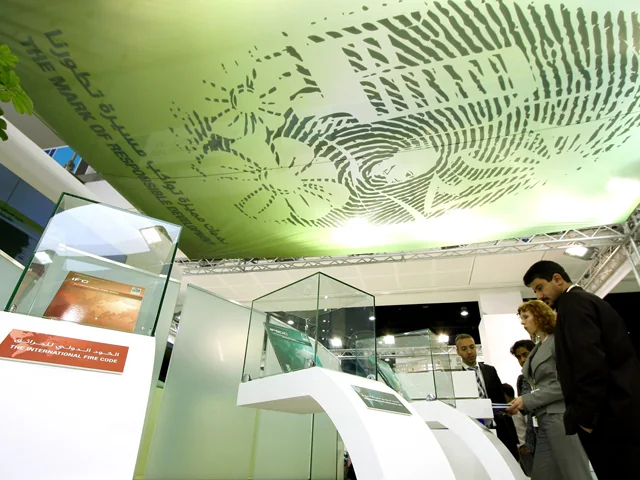

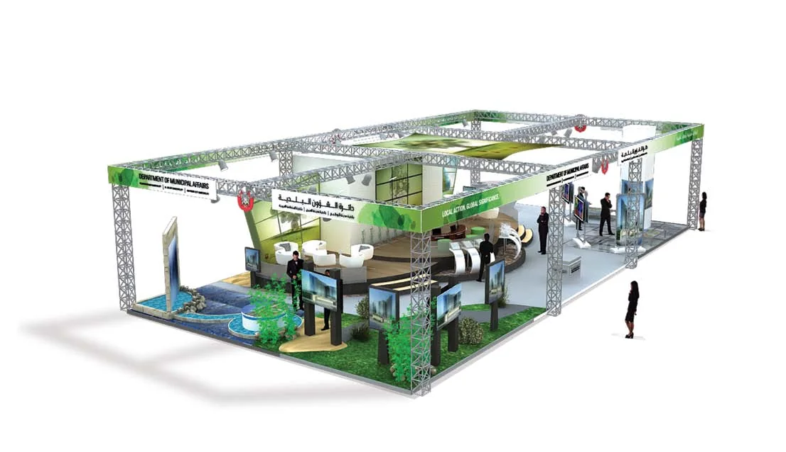

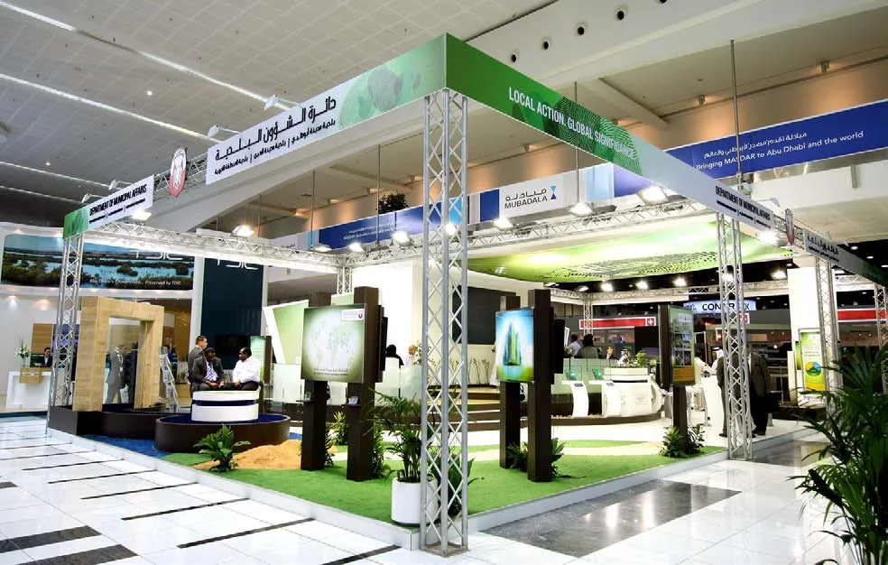

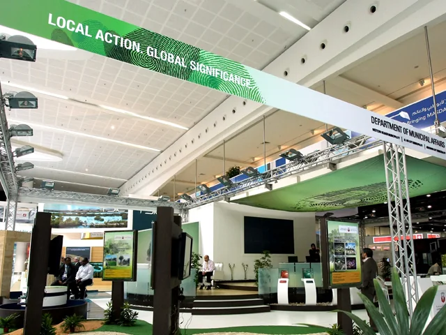

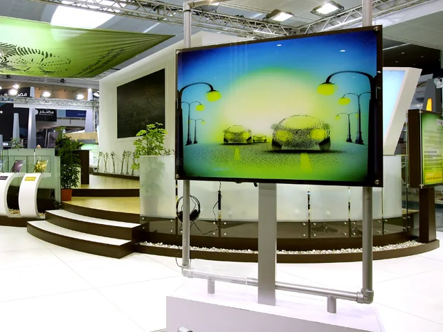
Local action. Global significance.
Department of Municipal Affairs, with the municipalities of Abu Dhabi City, Al Ain City and the Western Region · 2010, carried to 2013 · campaign by AntBrush, creative direction Antoni Gerges, with the team
Explore the campaign
The series, as it ran
In the newspapers.
As placed in the press, from our case study.


The invitation and the kit

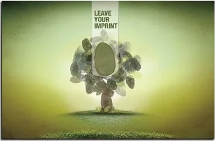

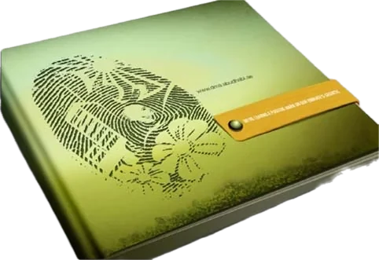

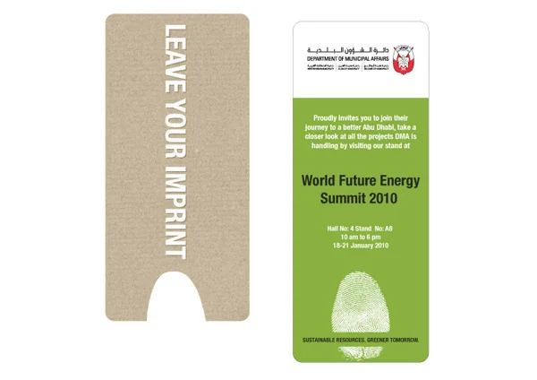

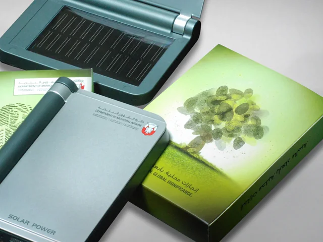

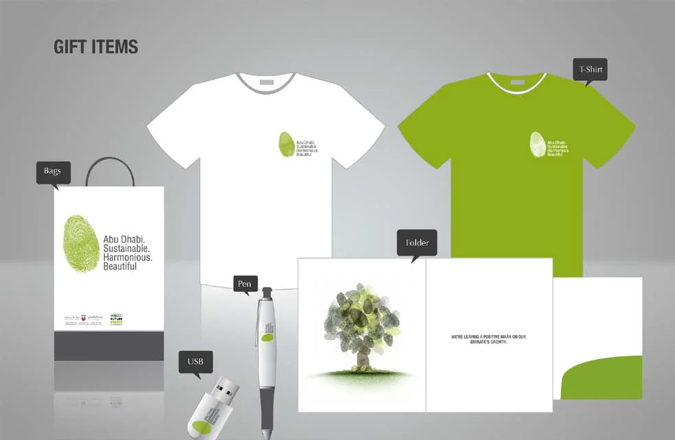

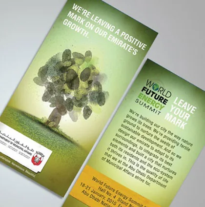

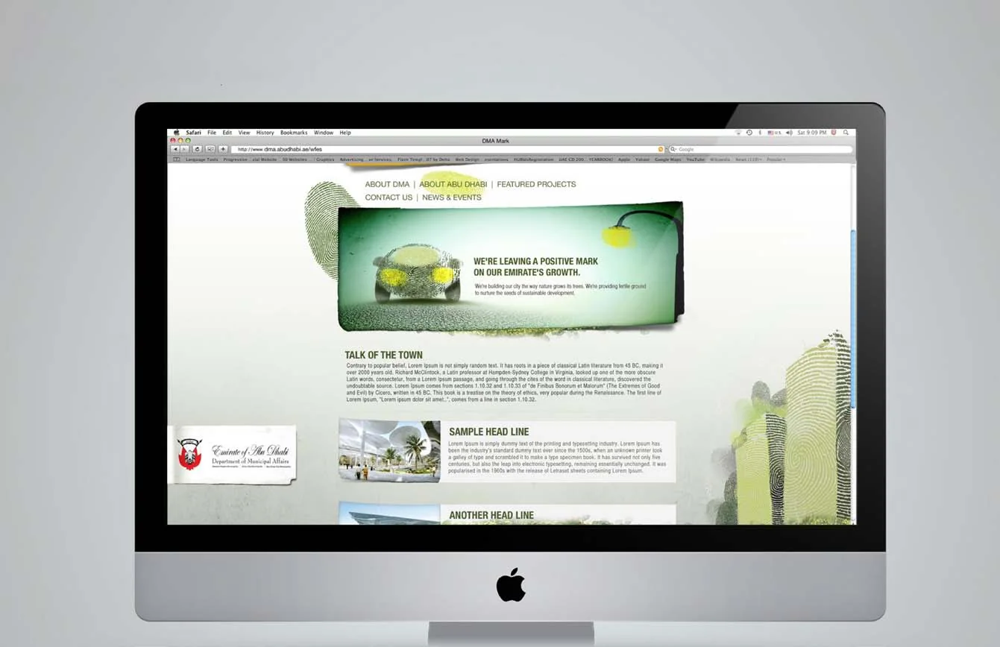
2010 to 2013
The city kept the print for four years.
It lit the 2011 pavilion and covered the 2013 brochure. For 2013 the tree gathered the city’s energy around it.

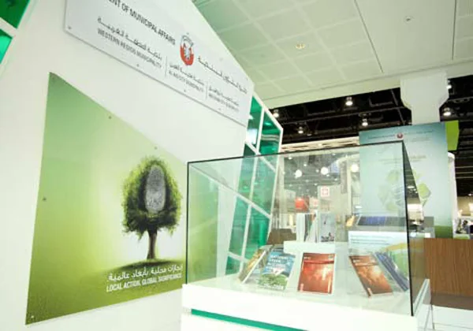

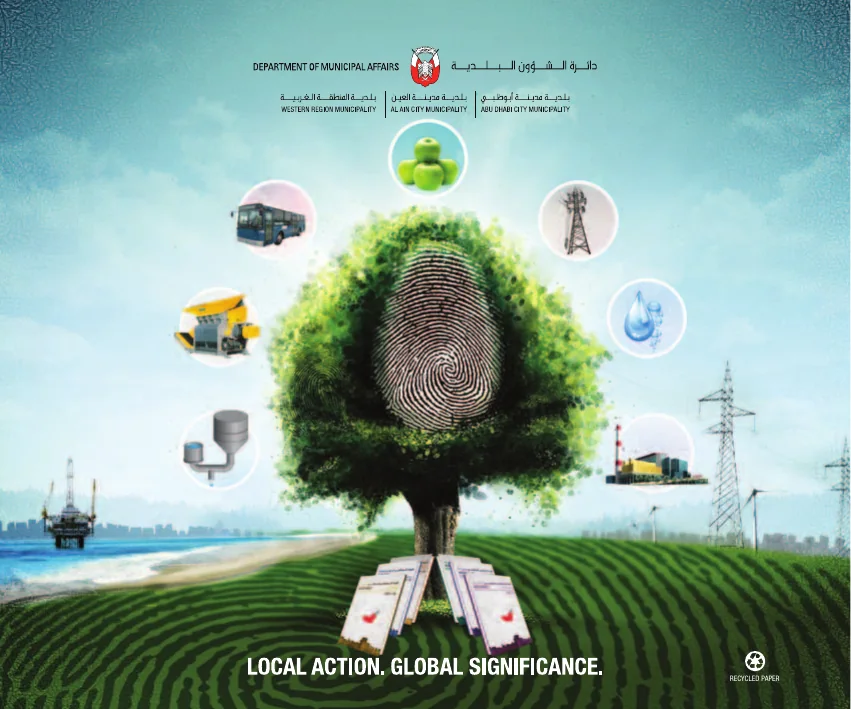

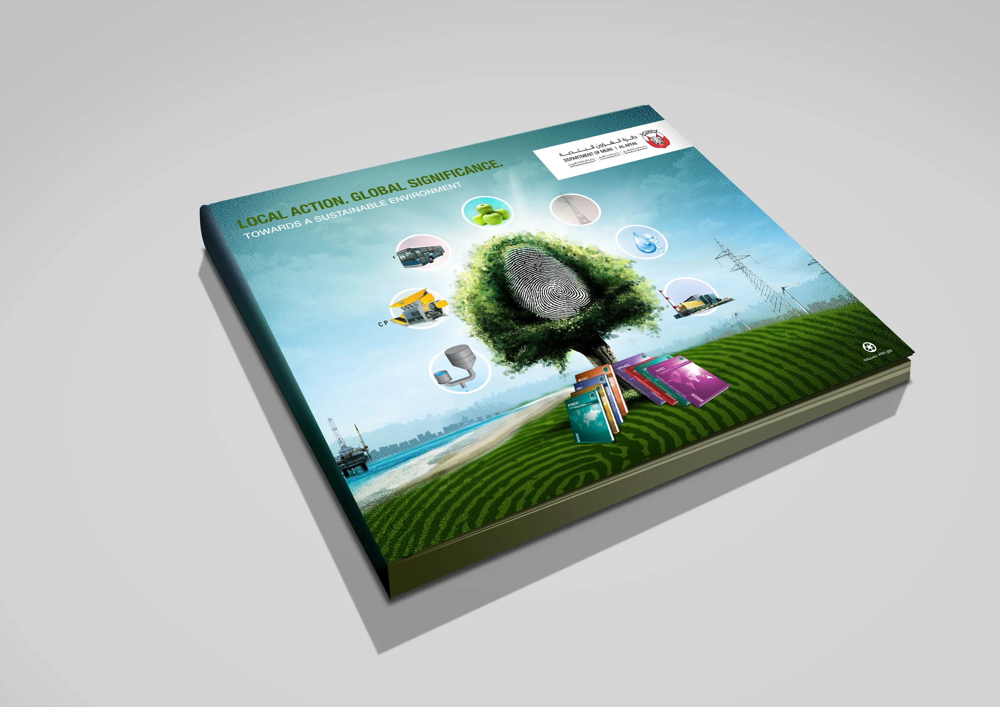

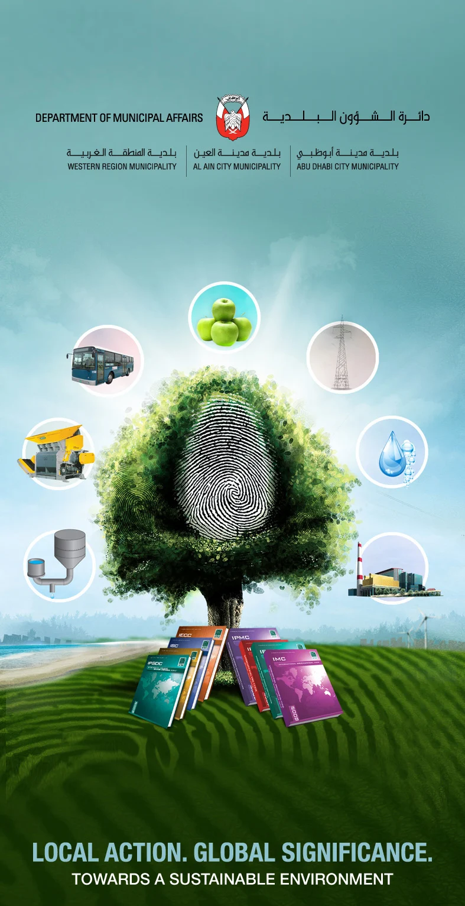

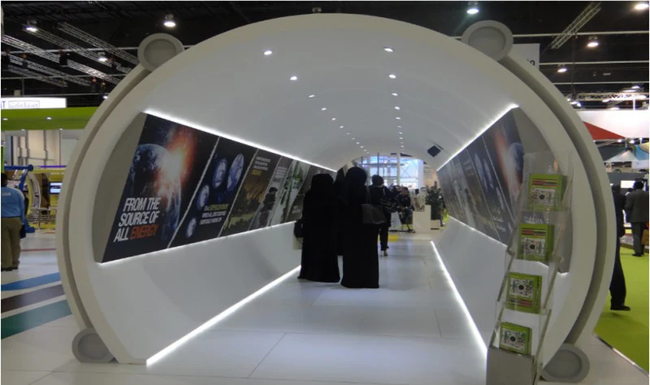

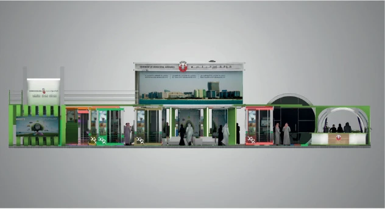
World Future Energy Summit · Abu Dhabi · 2010–2015
The capital’s pavilion, five times in six years.
For the Department of Municipal Affairs, Abu Dhabi (today the Department of Municipalities and Transport), at the Abu Dhabi National Exhibition Centre. Through AntBrush, the team and I delivered the concept, the design, the screens and the build.
From the source of all energy.
Zone 1: a lit tunnel, 36 feet long, lined with the story of energy, panel by panel.

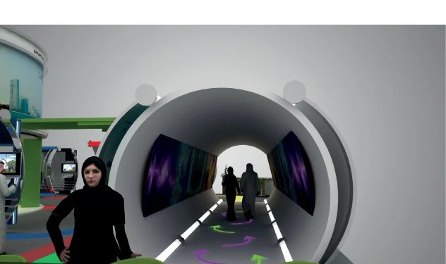
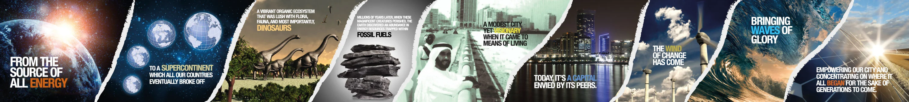
A drum on two levels.
At the centre, the department and its three municipalities below; a guest deck above, reached by a bridge.

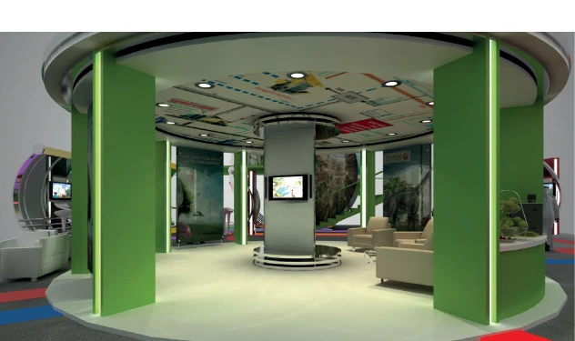

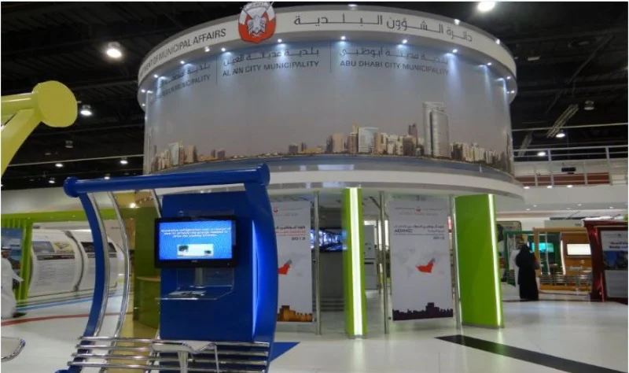
Explore the pavilions
A summit that heads of state open.
Every January, Abu Dhabi hosts the World Future Energy Summit, the Gulf’s clean-energy summit. Presidents and prime ministers open it; governments and energy companies fill its halls.
- 2010Mohamed Nasheed, MaldivesOur pavilion
- 2011Ólafur Ragnar Grímsson, Iceland
Sheikh Hasina, BangladeshOur pavilion - 2012Wen Jiabao, China
Kim Hwang-sik, South Korea - 2013François Hollande, France
Cristina Fernández de Kirchner, ArgentinaOur pavilion - 2014Macky Sall, Senegal
Ernest Bai Koroma, Sierra LeoneOur pavilion - 2015Abdel Fattah el-Sisi, EgyptOur pavilion
- 2016Enrique Peña Nieto, Mexico
Read more
The names are leaders who opened or addressed the summit in that year, as reported at the time. They are not visitors to our pavilion. The summit is hosted by Masdar at the Abu Dhabi National Exhibition Centre; from 2013 it opened Abu Dhabi Sustainability Week.
- 2010: the Presidency of the Maldives, address of 18 January 2010.
- 2011: the President of Iceland’s speech at the summit, 17 January 2011; The Financial Express, 20 January 2011.
- 2012: The National, 16 January 2012.
- 2013: Dubai Government Protocol, 15 January 2013; Masdar.
- 2014: The National, 20 January 2014; ENB (IISD), 20 January 2014.
- 2015: Masdar, 19 January 2015.
- 2016: State House, Seychelles, 18 January 2016; UAE Ministry of Foreign Affairs.
Trusted, edition after edition.
The capital’s municipal authority, edition after edition: 2010, 2011, 2013 (won by public tender), 2014, 2015.
Department of Municipal Affairs, Abu Dhabi, as it was then; today the Department of Municipalities and Transport. With the municipalities of Abu Dhabi City, Al Ain City and the Western Region (today Al Dhafra Region).
2010Hall 4, Stand A8: the code book 2011The Atrium: a green glass pavilion 2013Won by public tender: 5,600 sq ft 2014The design: twenty topics 2015Stand 4440, for four municipal bodies


Read more
2010: the campaign’s own bookmark prints the stand, Hall 4, Stand A8; our photographs of it were edited in April 2010. 2011: our checklist to the department, our photographs of 18 and 19 January 2011, and Al Ittihad’s photograph of the pavilion, 19 January 2011; the department was the summit’s Platinum Sponsor that year, “for the third consecutive year”. 2013: won by public tender, Tender 19/2012, and built to our design. 2014: the content and the creative, delivered on 18 January 2014. 2015: Stand 4440, 72 × 43 ft, shared by the department and the three municipalities, delivered on 24 January 2015.
2012 was not ours for the department: that year the same team designed ADNOC’s stand (below).
One city, in three zones.
Sixty-six by eighty-five feet. Walk in through the source of energy, reach the department at the centre, leave by the future.

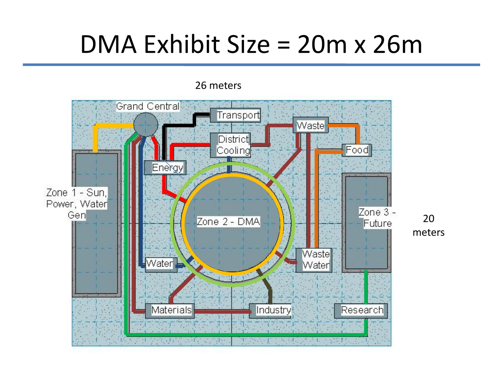

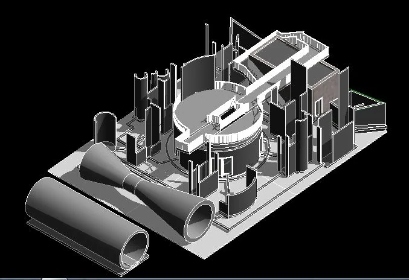

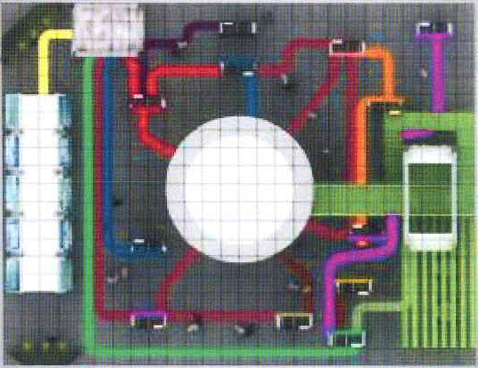
Touch screens, from the first edition.
Touch kiosks from 2010. In 2014, four touch presentations; in 2015, seven, one for each code.

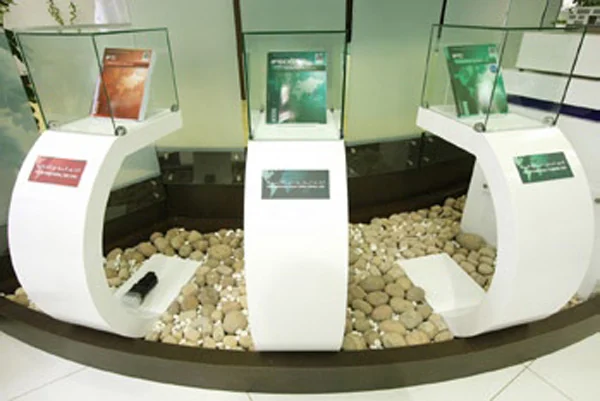

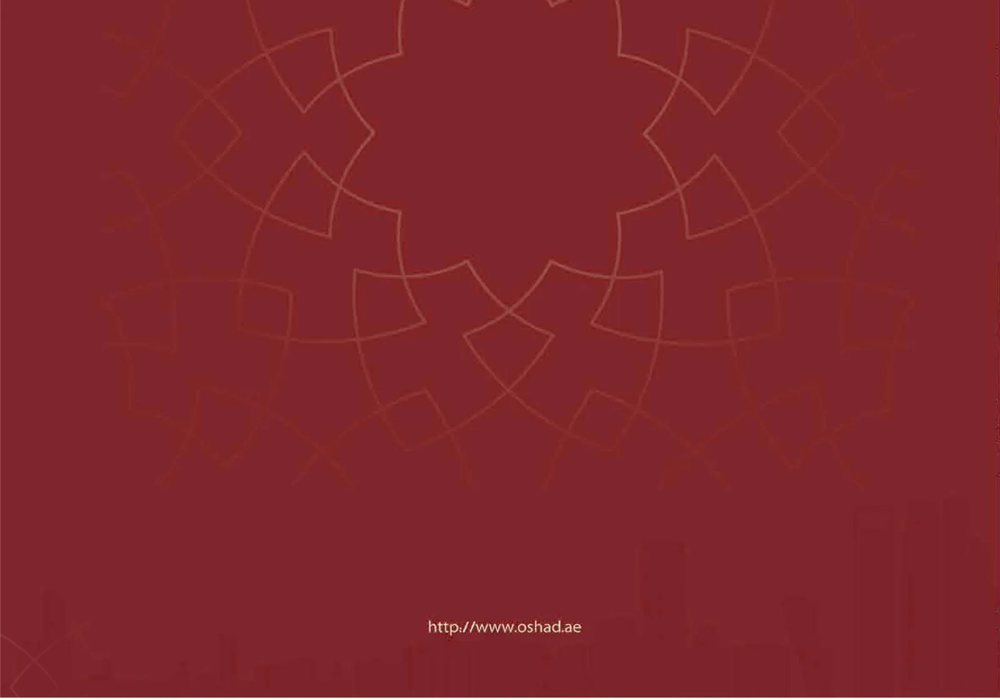
The codes, launched there.
Abu Dhabi’s new building codes went public on this floor: the code book in 2010, the launch in 2011. By 2015, one touch presentation for each code.
The codes’ own campaign, and their 2011 hologram presentation: the Building Codes page

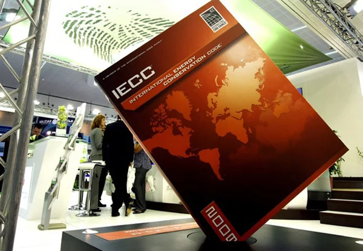

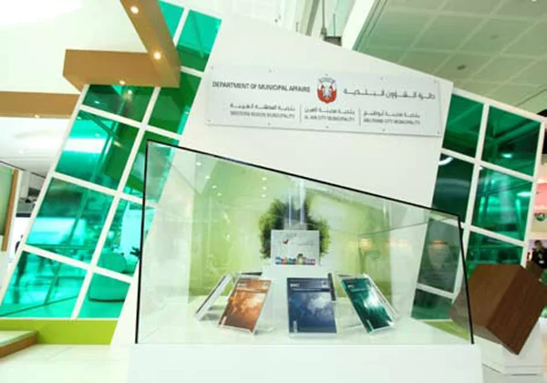
Five zones, twenty topics.
Water, energy, materials, transport and world resources: in 2014 the stand gave every project the city showed its place in one of five zones.
The twenty topics
Energy: Energy Code, Property Maintenance Code, Comprehensive Cooling Plan, Sector E3, LED lighting
Transport: New Addressing System, Salam Street Tunnel, Sheikh Zayed Bridge, Traffic controls
Materials: Asset Management Framework, Building codes: a 50-year life, Cold recycled asphalt, Recycled crushed aggregate, Geogrids, Construction waste, Cement replacement
Water: Plumbing codes, Private sewage disposal code, Irrigation Masterplan, Landscape Masterplan
The names are the 2014 topics, in the words of the delivery.
Others we served on the same floor.
Across the aisle, the same team designed ADNOC’s stand in 2012 and Abu Dhabi Chamber’s in 2013, both built by Marcoms.

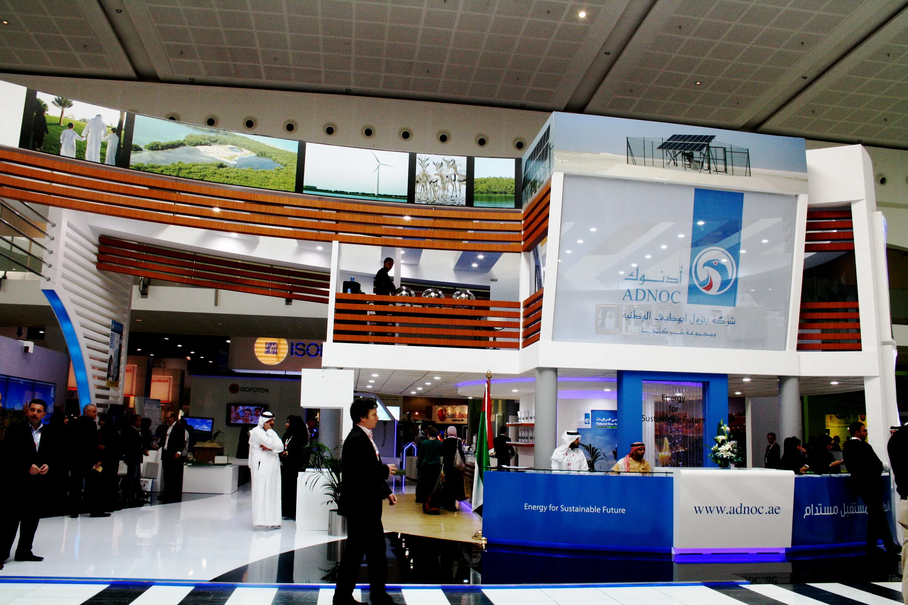

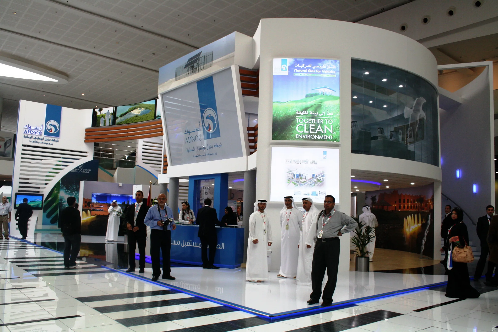

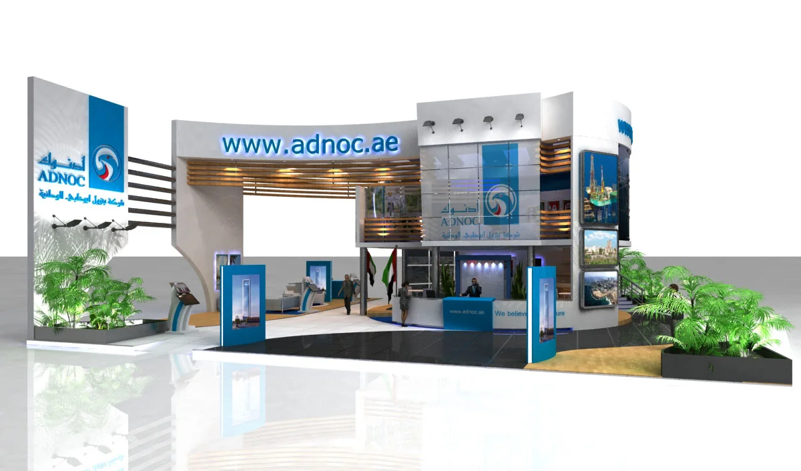

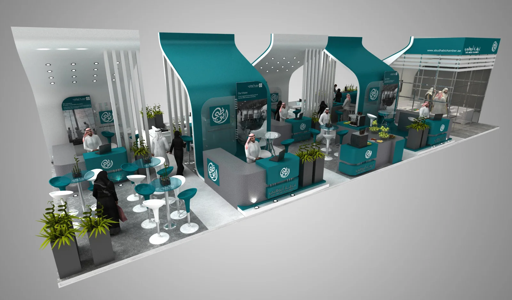

What we delivered.
Five editions for the capital’s municipal system, from the campaign to the stand, the screens and the films.
Idea & campaign
- “Leave your imprint”: the fingerprint tree, 2010 to 2013
- Posters, invitations and ads in The National and Al Ittihad
- Brochures, bags and gifts
- Micro-sites, 2010, 2011 and 2013
Space
- The stand: 2010, 2011, 2013 and 2015
- 2013: the energy tunnel, the drum and the guest deck, 5,600 sq ft
- 2014: the layout and the wall graphics of five zones
- 2015: Stand 4440, 3,100 sq ft, for four municipal bodies
Screens & film
- Touch presentations: 2011; four in 2014; seven in 2015
- The team and I also delivered six documentary films as part of the 2014 exhibition programme.
- Seven films and the coverage film, 2015
- The hologram presentation of the codes, 2011


From the invoices, delivery notes and tender papers of each edition, and the photographs of the stands.
The result.
Seven summits, 2010 to 2016. The capital’s pavilion five times, won by public tender in 2013, shared in 2015 by four municipal bodies on one stand.
Sources: the department’s tender, 19/2012, its variation and bill of quantities, 23 January 2013; the invoice of 27 January 2014; the four invoices and the delivery note of 24 January 2015.
Back to the pavilionCreative Director, Brand & Experiential